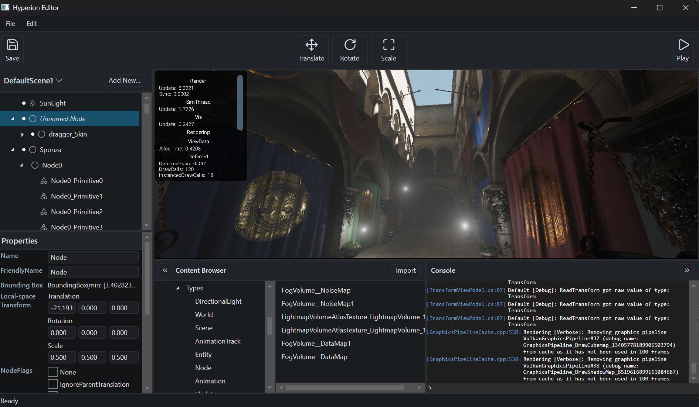
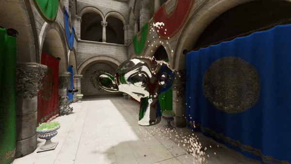

Open source · C++20 · MIT License
Hyperion Engine
High-performance 3D game engine in C++20, focused on modern rendering: clustered shading, GPU-driven rendering, and ray tracing.

About
Hyperion started in 2016 as a fork of an earlier engine project and has since been rewritten and redesigned. It compiles as a shared library (hyperion), with the editor and sample application linking against it.
Features
-
Visual editor
Scene editing, project files, and asset importing. Available on Windows and macOS.
-
Clustered shading
Clustered deferred shading for many dynamic lights. Forward clustered path for translucent materials.
-
Offline lightmapper
Bake lightmaps, irradiance / reflection probes for dynamic objects, fog volumes, and static shadow maps.
-
Global illumination
Real-time GI and reflections via ray tracing, with screen-space options for hardware without RT support.
-
Shader permutations
HLSL shaders compiled with DXC. Use
PERMUTE(...)to declare a permutation set; all combinations are compiled automatically. -
Level streaming
Grid-based streaming for large scenes.
-
Scripting
HypScript (in-house language) with hot reload. C# scripting supported via .NET.
-
Hot reload
Shaders and scripts reload without restarting.
Rendering


- Backend
- Vulkan (primary). Metal via MoltenVK on Apple platforms.
- Shading language
- HLSL, compiled with DXC to SPIR-V / DXIL. Mapped in
Config/Shaders/Shaders.hmf. - Physics
- Bullet Physics.
- Audio / Text
- OpenAL Soft for audio. FreeType for text.
Editor
The editor runs on Windows and macOS. It includes a console with commands and console variables (CVars) for controlling rendering, physics, and gameplay at runtime. See Documentation/Console.md in the repository.
Platforms
| Target | Status |
|---|---|
| Windows | Supported |
| macOS | Supported |
| Android | Supported (NDK 29, arm64-v8a, API 28+) |
| iOS | Supported |
| Steam Deck | Via Proton |
| Linux | Planned, not in active development |
Editor runs on Windows and macOS only.
Building
Requires CMake 3.10+ and the Vulkan SDK. Windows builds require VCPKG_ROOT to be set. macOS dependencies: brew install bullet molten-vk.
Windows
build.bat Release
build.bat Release Clang
build.bat DebugmacOS
./build.sh Release
./build.sh Debug
./build.sh Xcode ReleaseClone with --recursive, or run git submodule update --init --recursive. Full steps: Documentation/CompilingTheEngine.md in the repository.
License and contributing
MIT License, copyright 2026 Andrew J. MacDonald. Pull requests welcome. If a PR contains AI-generated code, note where it was used.
The project keeps AI use limited: UI work, bug-fix assistance, and code review. The codebase is written by hand.